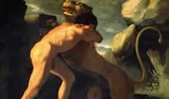

 Se trata del más célebre de los héroes griegos, el paradigma de la virilidad y el adalid del orden olímpico contra los monstruos ctónicos. Su extraordinaria fuerza es el principal de sus atributos, pero también lo son el coraje, el orgullo, cierto candor y un formidable vigor sexual. Se le considera el ancestro de los Reyes de Esparta y la influencia de esta polis en la Grecia Arcaica y Clásica fue una de las razones de la difusión de su leyenda y su culto.
 Un elemento principal de las conocidas tragedias que giran en torno a Hércules proviene del odio que la diosa Hera, esposa de Zeus, le tenía. Heracles era hijo de Zeus y Alcmena, y por tanto su mera existencia demostraba al menos una de las muchas infidelidades de aquél.
Un elemento principal de las conocidas tragedias que giran en torno a Hércules proviene del odio que la diosa Hera, esposa de Zeus, le tenía. Heracles era hijo de Zeus y Alcmena, y por tanto su mera existencia demostraba al menos una de las muchas infidelidades de aquél.